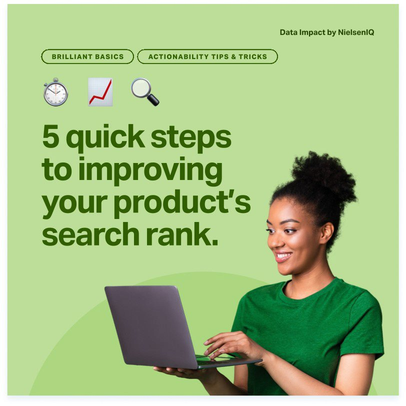

Case study · Social media
NIQ for Digital Commerce: social templates
A LinkedIn template system that brings two acquired brands, Data Impact and FoxIntelligence, into the NIQ family without losing their youthful, colourful voice.
- Client
- NIQ for Digital Commerce
- Year
- 2025
- Role
- Designer
- Tools
- Figma, PowerPoint


Background
When NielsenIQ (NIQ) acquired Data Impact and FoxIntelligence, their branding had to line up with NIQ's while keeping their distinct, youthful and engaging voice.
NIQ's social style is structured, which suits its brand legacy. For the NIQ for Digital Commerce page we wanted something a little more dynamic.
01
Where we started





The goal
A set of post templates that would:
- keep a youthful, fun and fresh look,
- follow NIQ's brand guidelines and signature elements,
- carry over key visuals from Data Impact and FoxIntelligence,
- offer enough variety for a lively LinkedIn feed,
- be easy for teams outside the core design team to rebuild in PowerPoint.
Carousels are the page's favourite format, so every template had to work alone as a single image or as the first slide of a carousel, with a hook that makes people click through.
02
The approach
Structure meets personality
I worked closely with a brand lead at NIQ to keep everything consistent, and designed the single posts and carousels in Figma.
From NIQ: the signature circles and structured layouts. From Data Impact: cut-out photos and buttons, which keep its punchy personality alive after the integration.
Colour with meaning: NIQ mostly alternates its bright and dark blues with touches of colour. For NIQ for Digital Commerce, colour carries context instead, so a post about organic food might be green. I adapted NIQ's four predefined colourways into a wide range of templates.


03
Stretching the system
Client testimonial
The templates adapted easily to formats other teams asked for, like this client testimonial carousel for Veepee.


Outcome
The templates bridge NIQ's corporate brand and the lively personalities of Data Impact and FoxIntelligence: structured, but still fresh and fun enough to set NIQ for Digital Commerce apart on LinkedIn.
The final PowerPoint template holds 45+ master slide layouts, so collaborators can create their own visuals quickly. Teams across NIQ adopted it fast, which made external materials more consistent and significantly cut prep time for webinars.